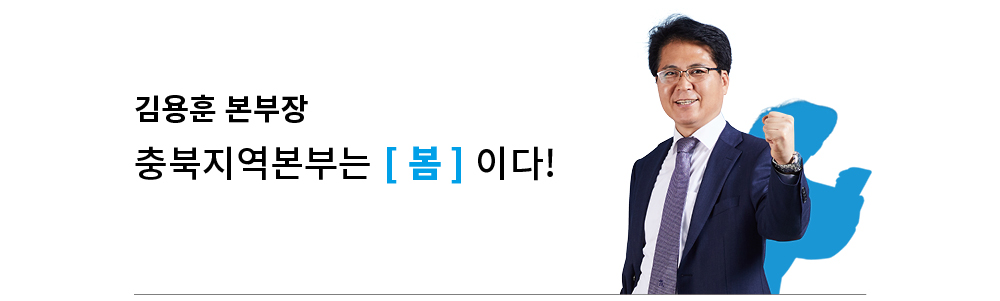
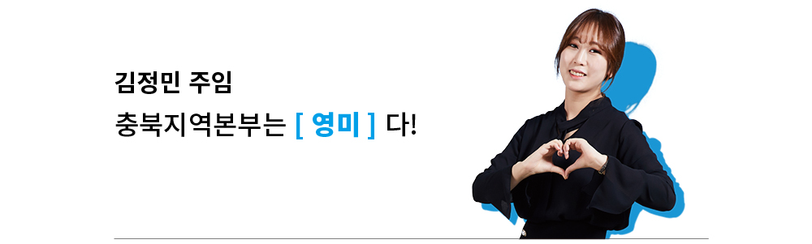
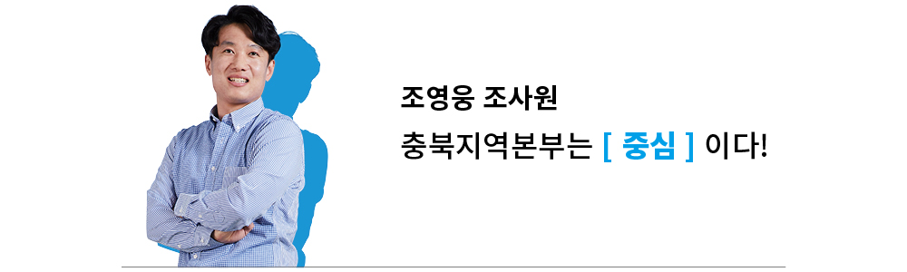

내일의 성장이 더욱 기대 |
1996년 청주지점 개설로 시작하여 올해로 22년 된 충북지역본부는 사람에 비유한다면 청년에 속하는 젊은 본부입니다. 2014년 사옥 신축 및 이전으로 현재 업무 중인 4층 사옥은 버스터미널과 가까워 교통이 편리하고 어느 지역본부보다도 쾌적하고 깨끗한 공간을 자랑합니다. 금융서비스팀, 조세정리팀, 국유재산관리팀, 충주지부로 구성되어 총 42명의 직원이 일하는 충북지역본부는 캠코의 지역본부들 중에서도 가장 적은 인원으로 운영되고 있습니다. |
|---|
충북지역본부, |
일도 잘하지만 어려운 이웃도 돕고 함께 수고하는 동료도 챙길 줄 아는 사람이 더욱 매력적인 법이지요. 충북지역본부는 충북 지역과 지역민을 생각하는 충북지역본부만의 따뜻한 매력을 곳곳에서 뿜뿜! 뽐내고 있는데요. |
|---|
충북지역본부는 |
때로는 프로페셔널하게, 때로는 가족처럼 친밀하게 일하는 충북지역본부의 비밀! 바로 매월 시시각각 진행되는 지역본부 문화 행사에 있습니다. 실제로 충북지역본부는 매월 1~2회에 걸쳐 ‘주제가 있는 커피/도시락 토크’를 열고 있습니다. |
|---|

겨우내 한컷 웅크렸던 생명들이 기지개를 켜는 봄처럼 항상 생동감 넘치는 충북지역본부 또한 성장하고 있습니다. 팍팍한 세상 속에서 단비를 맞듯 지역본부를 오가는 모든 이와 함께 즐겁고 좋은 추억 만들어 갑시다.

규모는 작지만 활기차고 열정 가득한 분위기, 소통과 이해를 기반으로 하는 원활한 협업, 변화에 대처하는 적극적인 자세와 자율적인 학습 노력, 쾌적한 업무 환경까지, 더 이상 바랄 게 없는 충북지역본부입니다!

구상 시인의 「꽃자리」중 “너의 앉은 그 자리가 바로 꽃자리니라”라는 구절이 있습니다. 현재의 삶에 충실하며 제가 선택한 이 꽃자리, 캠코에서 행복이라는 인생의 꽃을 더 활짝 피우고 싶은 소망을 가져봅니다.

진정한 소통이란 말하기보다 경청이라고 생각합니다. 직원 모두 서로의 말에 귀를 기울이며 많은 이야기를 나눔으로써 진정한 소통을 이루어가고 있습니다. 소통이야말로 우리의 행복지수를 높이는 일이 아닐까요?

충북지역본부는 영(Young)한 생각으로 변화와 혁신을 주도하고, 미(美)소로써 소통하고 화합하는 최고의 조직입니다! ‘영미!’라는 마법의 주문으로 여자 컬링팀이 은메달을 획득한 것처럼 늘 빛나면 좋겠습니다.

충북지역본부는 서울과 부산의 중심, 총괄청인 기획재정부가 위치한 세종정부청사 인근에 위치하여 한국자산관리공사의 중추적인 허리 역할을 충실히 수행하고 있습니다!
겨우내 한컷 웅크렸던 생명들이 기지개를 켜는 봄처럼 항상 생동감 넘치는 충북지역본부 또한 성장하고 있습니다. 팍팍한 세상 속에서 단비를 맞듯 지역본부를 오가는 모든 이와 함께 즐겁고 좋은 추억 만들어 갑시다.
규모는 작지만 활기차고 열정 가득한 분위기, 소통과 이해를 기반으로 하는 원활한 협업, 변화에 대처하는 적극적인 자세와 자율적인 학습 노력, 쾌적한 업무 환경까지, 더 이상 바랄 게 없는 충북지역본부입니다!
구상 시인의 「꽃자리」중 “너의 앉은 그 자리가 바로 꽃자리니라”라는 구절이 있습니다. 현재의 삶에 충실하며 제가 선택한 이 꽃자리, 캠코에서 행복이라는 인생의 꽃을 더 활짝 피우고 싶은 소망을 가져봅니다.
진정한 소통이란 말하기보다 경청이라고 생각합니다. 직원 모두 서로의 말에 귀를 기울이며 많은 이야기를 나눔으로써 진정한 소통을 이루어가고 있습니다. 소통이야말로 우리의 행복지수를 높이는 일이 아닐까요?
충북지역본부는 영(Young)한 생각으로 변화와 혁신을 주도하고, 미(美)소로써 소통하고 화합하는 최고의 조직입니다! ‘영미!’라는 마법의 주문으로 여자 컬링팀이 은메달을 획득한 것처럼 늘 빛나면 좋겠습니다.
충북지역본부는 서울과 부산의 중심, 총괄청인 기획재정부가 위치한 세종정부청사 인근에 위치하여 한국자산관리공사의 중추적인 허리 역할을 충실히 수행하고 있습니다!